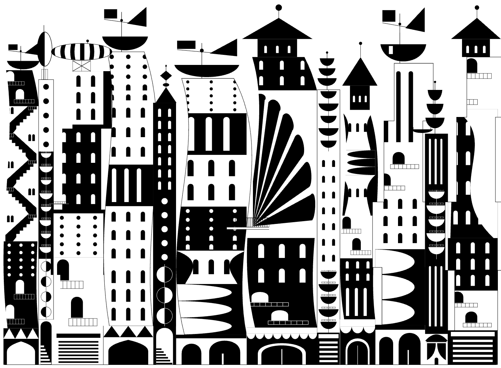
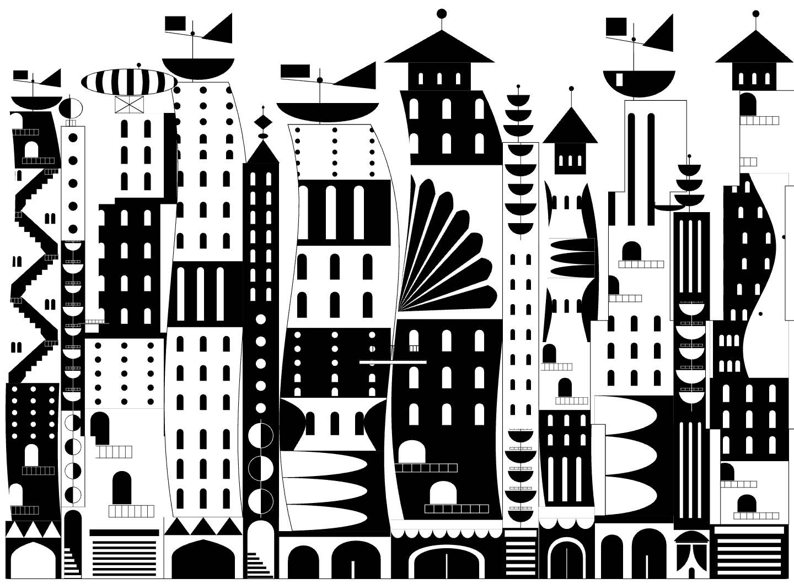
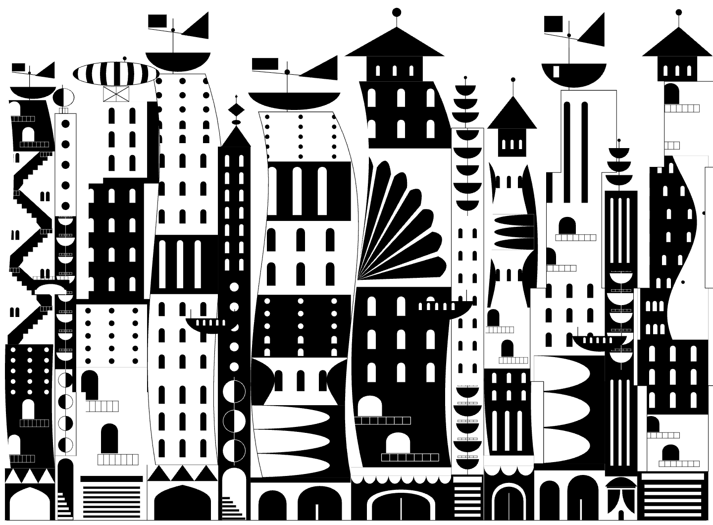
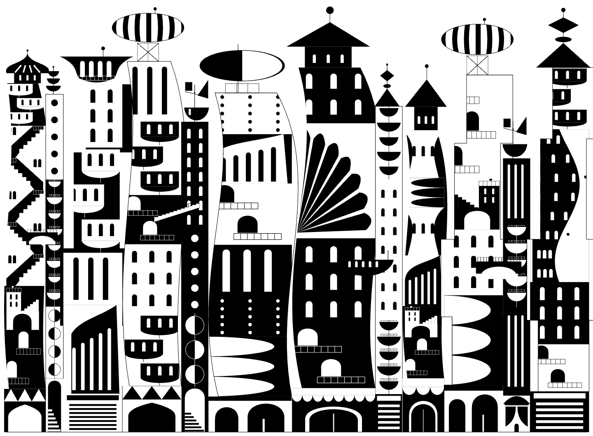
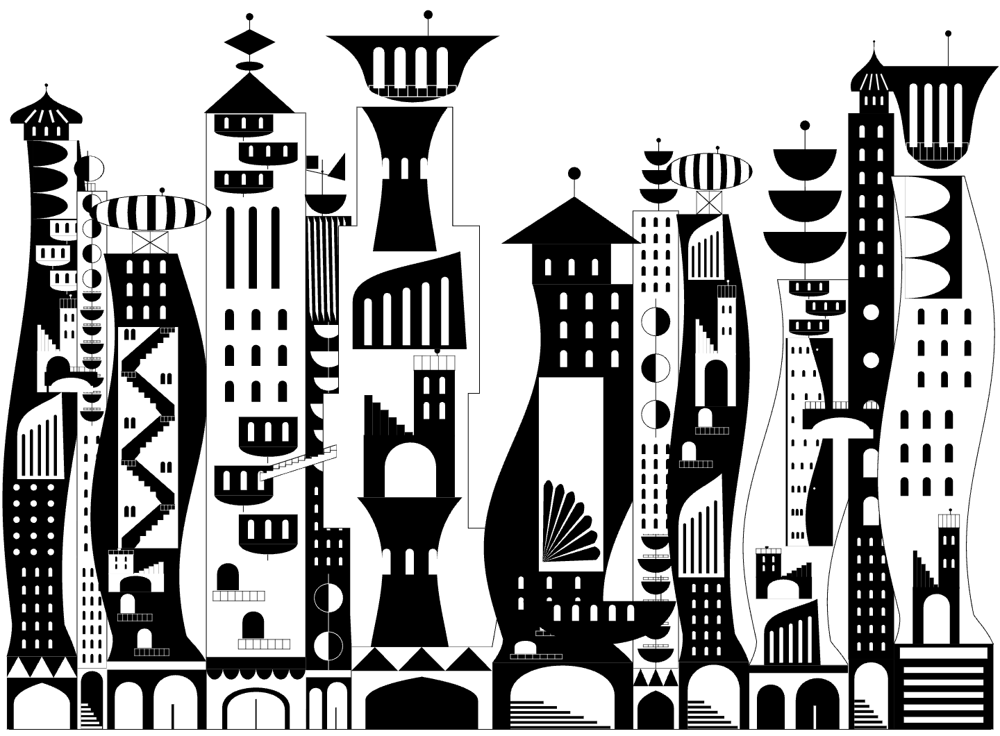
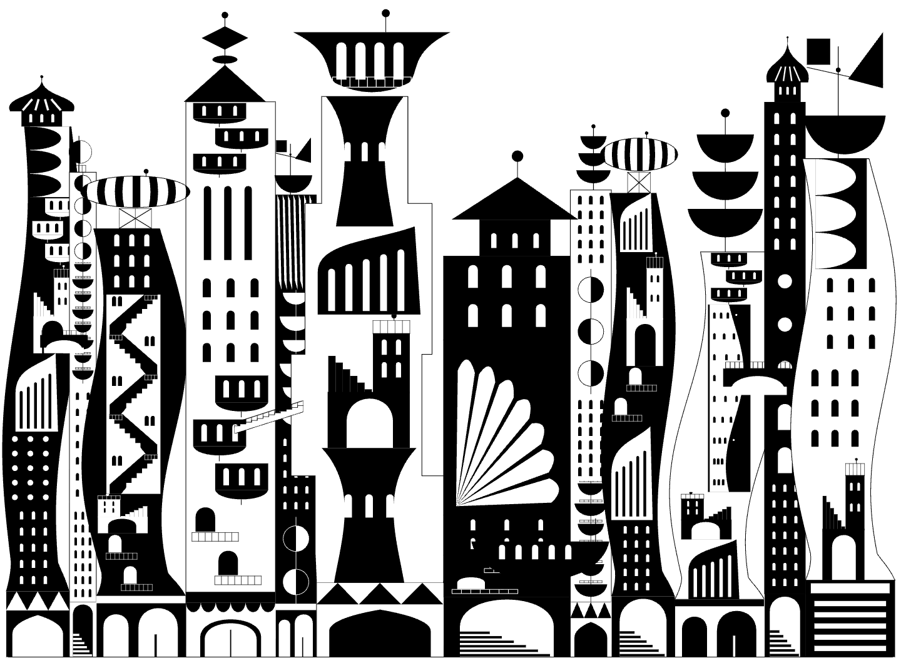

Six successive changes to the running block system. Each image uses seed 1907 at 1440 × 1060. Click to inspect the full-size render.

Stepped and curved edges, varied heights.

Compact fans, shaped walls, scaled roof pieces.

Arched bridges, hanging spans, crossing stairs.

Courtyards, offset arcades, fluted domes and sail pavilions.

Openings fitted inside profiles; wider shared spans.

Fan integrated with its tower; overhang and mobile checks.